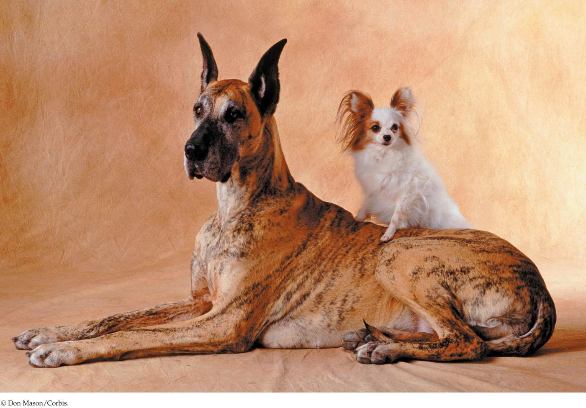

| 12 | Genomes |
|

The Papillon and the Great Dane are the same species—Canis lupus familiaris—yet they show great variation in size. Genome sequencing has provided insights into how size is controlled by genes.
|
Canis lupus familiaris, the dog, was domesticated by humans from the gray wolf more than 10,000 years ago. There are several kinds of wolves, and they all look more or less the same. Not so with “man’s best friend.” The American Kennel Club recognizes about 155 different breeds, varying greatly in size, shape, coat color, hair length, and even behavior. For example, an adult Chihuahua weighs just 1.5 kilograms, whereas a Scottish Deerhound weighs 70 kilograms. No other mammalian species shows such large phenotypic variation. Furthermore, we know of hundreds of genetic diseases in dogs, and many of these diseases have counterparts in humans. Biologists are curious about the molecular basis of canine phenotypic variation, and they view dogs as models for studying genetic diseases. For these reasons, the Dog Genome Project began in the late 1990s. Since then the sequences of several dog genomes have been published.
Two dogs—a boxer and a poodle—were the first of their species to have their entire genomes sequenced. The dog genome contains 2.8 billion base pairs of DNA in 39 pairs of chromosomes. There are 22,000 protein-coding genes, most of them with close counterparts in other mammals, including humans. The entire genome sequence made it easy to create a map of genetic markers—specific nucleotides or short sequences of DNA at particular locations on the genome that differ among individual dogs or breeds.
Genetic markers are being used to map the locations of genes that control particular traits. To do this, scientists must extract DNA from many individual dogs that vary in just one or a few characters. Taking samples of cells for DNA isolation is relatively easy: a cotton swab is swept over the inside of the dog’s cheek. As one scientist conducting genomic analyses of dogs said, the dogs “didn’t care, especially if they were going to get a treat or if there was a tennis ball in our other hand.”
The molecular methods used to analyze dogs have been applied to many other animals as well as to plants of economic and social importance to humans. And of course the human genome itself has been sequenced and is being studied intensively.
What does genome sequencing reveal about dogs and other animals?